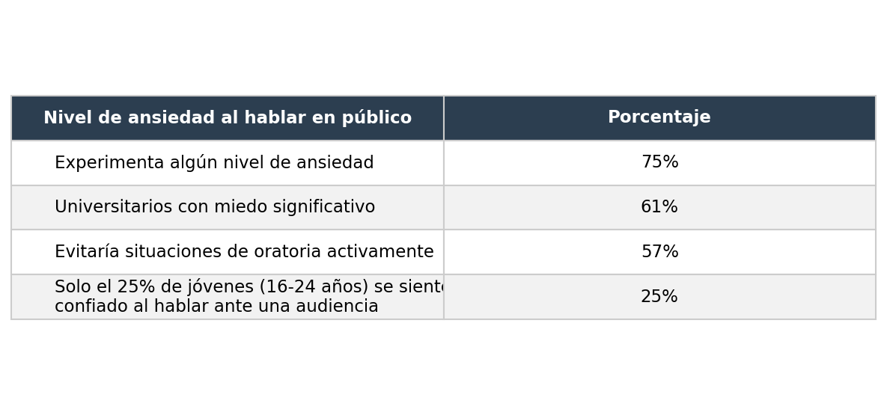
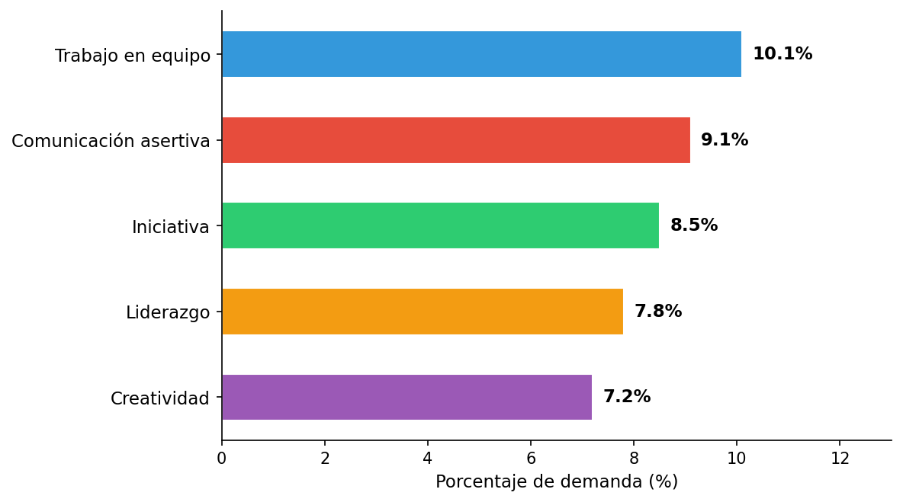
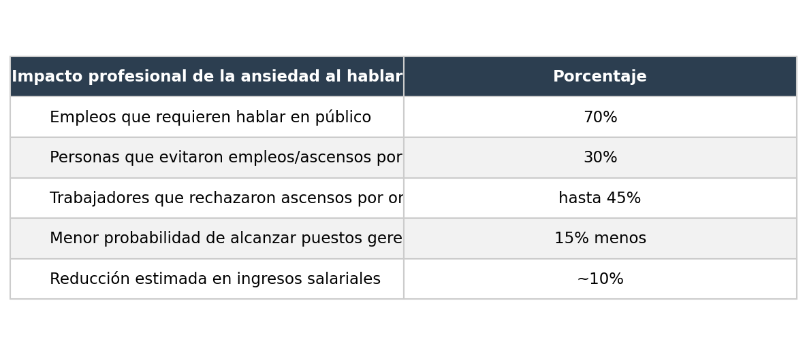
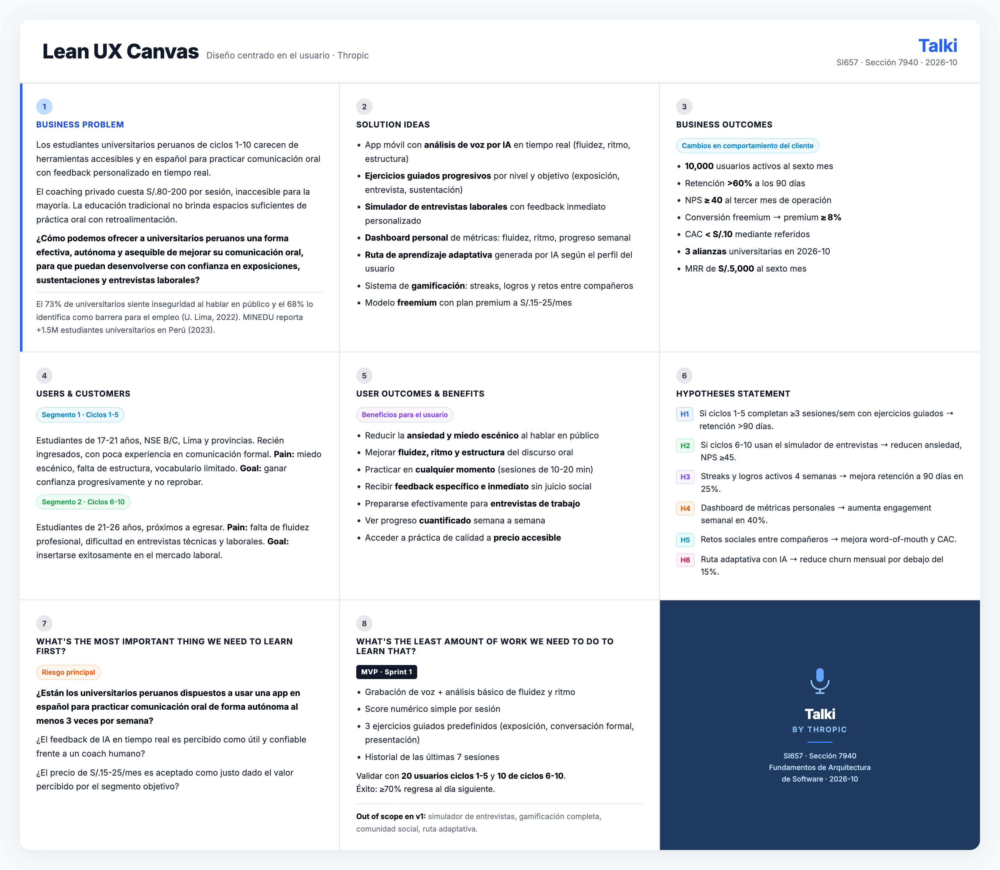

| Código | Apellidos y Nombres |
|---|---|
| U202313397 | Oroncoy Almeyda, Alejandro Daniel |
| U202312222 | Rivera Sosa, Eduardo Gael |
| U20241C134 | Tumi Oliden, Manuel Ignacio |
| Version | Fecha | Autor | Descripción de modificación |
|---|---|---|---|
| 1.0 | 09/04/2026 | Oroncoy Almeyda, Alejandro Daniel | Creación del documento |
En el siguiente cuadro se describe las acciones realizadas y enunciados de conclusiones por parte del grupo, que permiten sustentar el haber alcanzado el logro del ABET – EAC - Student Outcome.
| Criterio específico | Acciones realizadas | Conclusiones |
|---|---|---|
|
Criterio 1: ABET – EAC - Student Outcome 3 Capacidad para comunicar efectivamente con una amplia gama de audiencias. |
Oroncoy Almeyda, Alejandro Daniel TB1: Redactó la descripción de la startup Thropic y el producto Talki (sección 1.1.1), definió la propuesta de nombre del producto (1.2.1) y elaboró los segmentos objetivo con sus aspectos demográficos, geográficos y psicográficos (1.3), comunicando de forma clara el problema y la propuesta de valor a distintas audiencias. |
TB1: El equipo logró estructurar y comunicar de manera efectiva la propuesta de valor de Talki mediante la redacción del Capítulo I del informe, abarcando el perfil de la startup, la solución propuesta y los segmentos objetivo. Cada integrante contribuyó a transmitir el problema y la solución con claridad para una audiencia académica. |
|
Rivera Sosa, Eduardo Gael TB1: |
||
|
Tumi Oliden, Manuel Ignacio TB1: |
||
|
Criterio 2: ABET – EAC - Student Outcome 5 Capacidad para identificar, formular y resolver problemas complejos de ingeniería aplicando principios de ciencias de la ingeniería, ciencias básicas y matemáticas. |
Oroncoy Almeyda, Alejandro Daniel TB1: Aplicó el framework 5W+2H para analizar y formular el problema de comunicación oral en universitarios peruanos (sección 1.2.2), identificando causas, actores, contexto e impacto cuantificado. Realizó el análisis competitivo comparando Talki con ELSA Speak y Speeko mediante matriz SWOT (sección 2.1), derivando estrategias de diferenciación (2.1.2). |
TB1: El equipo identificó y formuló el problema central de Talki mediante herramientas de ingeniería de software (Lean UX, 5W+2H, análisis competitivo), estableciendo las bases para el diseño de una solución técnica fundamentada en evidencia y orientada al usuario. |
|
Rivera Sosa, Eduardo Gael TB1: |
||
|
Tumi Oliden, Manuel Ignacio TB1: |
Thropic es una startup de tecnología educativa fundada por estudiantes de Ingeniería de Software de la Universidad Peruana de Ciencias Aplicadas (UPC). Nuestra misión es democratizar el acceso a herramientas de desarrollo personal mediante inteligencia artificial.
Misión: Empoderar a los estudiantes universitarios a desarrollar habilidades de comunicación oral efectiva a través de tecnología accesible e inteligente.
Visión: Ser la plataforma líder en Latinoamérica para el desarrollo de habilidades de comunicación oral en el ámbito académico y profesional para 2030.
Talki es nuestra solución principal: una aplicación móvil que utiliza IA para analizar, evaluar y retroalimentar la comunicación oral de estudiantes universitarios en tiempo real, ayudándoles a mejorar su fluidez, pronunciación, estructura del discurso y confianza al hablar en público.
| Perfil | Foto |
|---|---|
|
Oroncoy Almeyda, Alejandro Daniel — U202313397 Mi nombre es Alejandro Oroncoy, tengo 19 años y soy estudiante de Ingeniería de Software en el quinto ciclo. Me considero una persona proactiva, autodidacta y orientada a objetivos. Disfruto aprender nuevas tecnologías por cuenta propia y busco siempre entregar resultados de calidad. Tengo experiencia en desarrollo backend con Java y Spring Boot, así como en Python y servicios cloud. Me motiva construir soluciones que generen impacto real, y en Thropic asumo con entusiasmo el reto de llevar Talki al mercado universitario peruano. |
|
|
Rivera Sosa, Eduardo Gael — U202312222 Yo soy Gael Rivera. Soy un estudiante de Ingeniería de Software comprometido con la responsabilidad en cada tarea que asumo. Poseo habilidades de liderazgo que facilitan la comunicación y el trabajo colaborativo. Siempre estoy dispuesto a abordar desafíos y encontrar soluciones en equipo. |
|
|
Tumi Oliden, Manuel Ignacio — U20241C134 Soy una persona relajada y que se adapta fácilmente, siempre buscando maneras de hacer las cosas bien sin complicaciones. Me adapto fácilmente al método de trabajo de los demás, prefiriendo colaborar en lugar de liderar, y suelo llevarme bien con la mayoría de las personas. En mi tiempo libre, disfruto haciendo deporte, especialmente jugando voleibol, y me divierto jugando videojuegos. |
Talki es el nombre de nuestra aplicación. El nombre proviene de la combinación de “Talk” (hablar en inglés) con el sufijo “-i” que evoca inteligencia e innovación. Talki representa la idea de tener un compañero inteligente que te ayuda a mejorar tu forma de comunicarte oralmente.
Las deficiencias en comunicación oral afectan el desempeño académico y profesional de los universitarios peruanos.
Se manifiesta principalmente al momento de realizar exposiciones, sustentaciones, entrevistas de trabajo y presentaciones profesionales.
En aulas universitarias, plataformas virtuales y entornos laborales/prácticas.
Estudiantes de educación superior peruanos (ciclos 1-10), especialmente aquellos sin acceso a coaching personalizado.
La educación tradicional no brinda suficientes espacios de práctica oral con feedback personalizado. El acceso a coaches es costoso y limitado.
Talki usa IA para grabar, analizar y retroalimentar la comunicación oral del usuario en tiempo real, con ejercicios progresivos y personalizados.
Según la Superintendencia Nacional de Educación Superior Universitaria (SUNEDU, 2023), más de 1.5 millones de estudiantes se encuentran matriculados en universidades peruanas, representando un mercado potencial significativo para soluciones de desarrollo de competencias comunicativas.
En el plano de la ansiedad comunicativa, la literatura científica muestra cifras consistentemente elevadas. Maldonado et al. (2022), en un estudio experimental con universitarios publicado en la Revista Latina de Comunicación Social, confirmaron que la ansiedad al hablar en público impacta directamente el desempeño académico y la participación activa en clases. A nivel global, investigaciones compiladas por Teleprompter.com (2024) revelan que el 75% de las personas experimenta algún nivel de ansiedad al hablar en público, y el 61% de universitarios la reporta como un temor significativo.
Figura 1: Prevalencia de la ansiedad al hablar en público en población universitaria

Nota. Elaboración propia basada en Teleprompter.com (2024) y Crown Counseling (2024).
Respecto al impacto en la empleabilidad, un estudio descriptivo sobre competencias laborales blandas en egresados universitarios latinoamericanos (Redalyc, 2022) identificó que la comunicación asertiva es la segunda habilidad más demandada por empleadores (9.1%), solo detrás del trabajo en equipo (10.1%). Sin embargo, es también una de las competencias con mayores brechas en egresados.
Figura 2: Habilidades blandas más demandadas por empleadores en Latinoamérica

Nota. Elaboración propia basada en Redalyc (2022).
Finalmente, la ansiedad comunicativa no solo afecta el desempeño académico sino también la trayectoria profesional. Datos de Crown Counseling (2024) y Teleprompter.com (2024) indican que el 70% de los empleos requiere algún nivel de oratoria o presentaciones; el 30% de las personas ha evitado postular a empleos o ascensos debido a esta ansiedad; y quienes la padecen tienen un 15% menos de probabilidad de alcanzar posiciones gerenciales.
Figura 3: Impacto profesional de la ansiedad al hablar en público

Nota. Elaboración propia basada en Crown Counseling (2024) y Teleprompter.com (2024).
Ante este escenario, el costo de un coach de oratoria privado en Lima oscila entre S/. 80 y S/. 200 por sesión (con frecuencia semanal recomendada), haciendo inaccesible el entrenamiento personalizado para la mayoría del segmento universitario. Talki aborda esta brecha mediante IA accesible desde el smartphone, a una fracción del costo.
Segmento 1: Hemos observado que los estudiantes de ciclos 1-5 carecen de espacios seguros y accesibles para practicar la comunicación oral con feedback real. El impacto es bajo desempeño en exposiciones y pérdida de oportunidades académicas. ¿Cómo podríamos brindarles práctica guiada con IA para que ganen confianza progresivamente?
Segmento 2: Hemos observado que los estudiantes de ciclos 6-10 no tienen herramientas asequibles para prepararse para entrevistas laborales y presentaciones profesionales. El impacto es dificultad para insertarse en el mercado laboral. ¿Cómo podríamos simular entornos reales de comunicación profesional para que estén listos al graduarse?
Creemos que aumentaremos la retención de usuarios si los estudiantes de ciclos 1-5 logran completar al menos 3 sesiones semanales de práctica con la feature de “ejercicios guiados con IA”.
Creemos que mejoraremos la satisfacción si los estudiantes de ciclos 6-10 logran reducir su ansiedad en entrevistas con la feature de “simulador de entrevistas con feedback en tiempo real”.
Creemos que mejoraremos la retención si los usuarios gamifican su progreso con la feature de “streaks y logros” durante 4 semanas consecutivas.
Creemos que aumentaremos el engagement si los estudiantes pueden ver su análisis de progreso detallado con la feature de “dashboard de métricas personales”.
Creemos que aumentaremos el word-of-mouth si los usuarios pueden compartir sus logros con la feature de “comunidad y retos entre amigos”.
Creemos que reduciremos el churn si los usuarios reciben un plan de práctica personalizado con la feature de “ruta de aprendizaje adaptativa con IA”.

Segmento 1: Estudiantes universitarios de ciclos 1 al 5
Aspectos Demográficos: - Edad: 17-21 años - Sexo: Masculino y femenino - Nivel socioeconómico: B y C - Ciclo: 1 al 5 de educación superior universitaria
Aspectos Geográficos: - País: Perú - Región: Lima Metropolitana y principales ciudades del interior (Arequipa, Trujillo, Piura) - Tipo de institución: Universidades privadas y públicas
Aspectos Psicográficos: - Motivaciones: Mejorar calificaciones en cursos con exposiciones, ganar confianza al hablar en público, no pasar vergüenza frente a compañeros - Dolores: Miedo escénico pronunciado, vocabulario académico limitado, falta de estructura al exponer, nerviosismo que bloquea el discurso - Comportamientos digitales: Nativos digitales, uso intensivo del smartphone, acostumbrados a apps de aprendizaje (Duolingo, YouTube), disponibles para sesiones cortas de 10-15 min
Segmento 2: Estudiantes universitarios de ciclos 6 al 10
Aspectos Demográficos: - Edad: 21-26 años - Sexo: Masculino y femenino - Nivel socioeconómico: B y C - Ciclo: 6 al 10 de educación superior universitaria, próximos a egresar
Aspectos Geográficos: - País: Perú - Región: Lima Metropolitana y principales ciudades con oferta laboral tecnológica - Tipo de institución: Universidades con programas de prácticas preprofesionales activos
Aspectos Psicográficos: - Motivaciones: Conseguir prácticas o primer empleo, destacar en entrevistas técnicas y de RR.HH., comunicar ideas con claridad en entornos profesionales - Dolores: Dificultad para expresarse con fluidez y vocabulario profesional, ansiedad ante entrevistas de trabajo, falta de espacios reales de práctica con feedback concreto - Comportamientos digitales: Usuarios activos de LinkedIn, plataformas de empleabilidad y apps de productividad; dispuestos a pagar por herramientas que generen ROI directo en su carrera
| Competitive Analysis Landscape | |||||
|---|---|---|---|---|---|
| ¿Por qué llevar a cabo este análisis? | Para identificar las fortalezas, debilidades y estrategias de nuestros competidores directos e indirectos, con el fin de definir la propuesta de valor diferenciada de Talki y detectar oportunidades de mercado no atendidas. | ||||
| Nombre | Talki (Thropic) | ELSA Speak | Speeko | Orai | |
| Logo | |||||
| Perfil | Overview | App móvil con IA que analiza y retroalimenta la comunicación oral de estudiantes universitarios peruanos en tiempo real, en español. | App de pronunciación en inglés con IA que evalúa y corrige la pronunciación del usuario en tiempo real mediante reconocimiento de voz avanzado. | App de coaching para hablar en público con lecciones estructuradas impartidas por coaches reales y ejercicios de práctica. | App móvil con IA que analiza la oratoria del usuario (ritmo, palabras de relleno, energía, expresión facial) y entrega retroalimentación inmediata y lecciones personalizadas. |
| Ventaja competitiva ¿Qué valor ofrece a los clientes? | Feedback en tiempo real en español con contexto académico peruano; enfocado en universitarios latinoamericanos. | Motor de IA especializado en detección de errores fonéticos del inglés; más de 50M usuarios globales. | Contenido creado por coaches profesionales de oratoria; estructura de cursos progresivos y micro-lecciones de 5 minutos. | Análisis multimodal (voz + expresión facial) con plan de entrenamiento adaptativo; gamificación y seguimiento de progreso detallado. | |
| Perfil de Marketing | Mercado objetivo | Estudiantes universitarios peruanos/latinoamericanos de ciclos 1-10. | Hablantes no nativos de inglés que desean mejorar su pronunciación, principalmente en Asia y Latinoamérica. | Profesionales y estudiantes angloparlantes que quieren mejorar su oratoria y liderazgo comunicacional. | Profesionales, estudiantes y ejecutivos angloparlantes que necesitan mejorar presentaciones y discursos. |
| Estrategias de Marketing | Freemium, marketing universitario, referidos entre compañeros. | Freemium, referidos, partnerships con instituciones educativas. | Freemium, publicidad en LinkedIn y redes, membresías corporativas. | Freemium con trial de 7 días, alianzas con instituciones educativas, plan Enterprise para equipos. | |
| Perfil de Producto | Productos & Servicios | App móvil con análisis de voz, ejercicios guiados, simulador de entrevistas y dashboard de progreso. | App móvil (iOS/Android) con lecciones de pronunciación, conversación simulada y análisis fonético detallado. | App móvil con cursos de oratoria, ejercicios diarios de 5 minutos y biblioteca de habilidades comunicacionales. | App móvil (iOS/Android) con análisis de voz e imagen, lecciones gamificadas, historial de práctica y plan personalizado de 4 semanas. |
| Precios y Costos | Freemium; plan premium S/. 15-25/mes. | Gratis con funciones limitadas; premium desde $6.99/mes. | Gratis con funciones básicas; premium desde $9.99/mes. | Gratis con funciones básicas; premium desde $9.99/mes o $39.99/año. | |
| Canales de distribución | App Store, Google Play, web. | App Store, Google Play, web. | App Store, Google Play. | App Store, Google Play. | |
| Análisis SWOT | Fortalezas | Español nativo, contexto universitario peruano, IA personalizada, gamificación. | IA muy precisa, gran base de usuarios global, contenido extenso y probado. | Contenido de alta calidad creado por expertos, formato de micro-lecciones atractivo. | Análisis multimodal avanzado, plan adaptativo personalizado, gamificación efectiva, disponible en iOS y Android. |
| Oportunidades | Mercado latinoamericano poco atendido, alianzas con universidades, expansión a otros países. | Expansión a otros idiomas, mercado B2B con instituciones educativas. | Mercado B2B corporativo, expansión a español y otros idiomas. | Expansión a idiomas distintos del inglés, mercado educativo universitario latinoamericano sin atender. | |
| Debilidades | Startup nueva sin track record, recursos limitados, marca poco conocida. | Enfocado solo en pronunciación del inglés, no cubre comunicación oral en español. | Sin IA para feedback en tiempo real, contenido exclusivamente en inglés. | Solo disponible en inglés, sin adaptación al contexto académico ni latinoamericano. | |
| Amenazas | Entry de apps internacionales al mercado hispanohablante, competidores con mayor financiamiento. | Competidores con IA generativa más avanzada, apps multiidioma con mayor alcance. | Apps con IA generativa que ofrecen feedback personalizado, saturación del mercado edtech. | Saturación del mercado edtech en inglés, nuevos competidores con IA generativa más potente. | |
A partir del análisis competitivo, Thropic adopta las siguientes estrategias para posicionar Talki en el mercado:
Frente a ELSA Speak: ELSA Speak domina el mercado de pronunciación en inglés pero no atiende la comunicación oral en español ni el contexto académico latinoamericano. Talki se diferencia enfocándose exclusivamente en español con contexto universitario peruano, ofreciendo ejercicios de exposición académica y simulación de sustentaciones que ELSA no contempla.
Frente a Speeko: Speeko utiliza contenido pregrabado por coaches sin feedback personalizado en tiempo real. Talki responde con IA generativa que analiza el discurso del usuario en el momento y entrega retroalimentación específica e inmediata, no guiones estáticos. Además, Speeko no tiene presencia en el mercado hispanohablante, lo que representa una ventana de oportunidad directa.
Frente a Orai: Orai ofrece análisis de oratoria con IA de manera similar a Talki, pero opera exclusivamente en inglés y sin ninguna adaptación al contexto académico latinoamericano. Talki capitaliza esta brecha ofreciendo la misma profundidad de análisis (ritmo, fluidez, claridad) pero en español, con ejercicios diseñados para sustentaciones, exposiciones universitarias y entrevistas de prácticas preprofesionales típicas del sistema educativo peruano.
Estrategia de diferenciación general:
| Tareas | [Segmento 1] | [Segmento 2] | ||
|---|---|---|---|---|
| Frecuencia | Importancia | Frecuencia | Importancia | |
| [COMPLETAR] | ||||
| Epic / Story ID | Título | Descripción | Criterios de Aceptación | Relacionado con (Epic ID) |
|---|---|---|---|---|
| # Orden | User Story ID | Título | Descripción | Story Points |
|---|---|---|---|---|
| ID | Título | Descripción |
|---|---|---|
| ID | Atributo de Calidad | Fuente | Estímulo | Artefacto | Entorno | Respuesta | Medida de Respuesta |
|---|---|---|---|---|---|---|---|
| ID | Restricción |
|---|---|
| ID | Concern | Descripción |
|---|---|---|
| ID | Decisión de Diseño | Estado | Driver(s) Relacionados |
|---|---|---|---|
| Elemento | Responsabilidad | Interfaces |
|---|---|---|
| Por hacer | En progreso | Hecho |
|---|---|---|
Se utilizó GitHub como plataforma de control de versiones y colaboración en equipo.
Los integrantes del equipo y sus nombres de usuario en GitHub son los siguientes:
| Integrantes | Nombre en GitHub |
|---|---|
| Oroncoy Almeyda, Alejandro Daniel | alejooroncoy |
| Rivera Sosa, Eduardo Gael | gael-rs |
| Tumi Oliden, Manuel Ignacio | ManuelTumi2224 |
| Sprint # | User Story | Work-Item / Task | Descripción | Estimación (horas) | Asignado a | Estado |
|---|---|---|---|---|---|---|
| Sprint 1 |
| Repository | Branch | Commit ID | Commit Message | Commit Message Body | Committed on (Date) |
|---|---|---|---|---|---|
| Repository | Branch | Commit ID | Commit Message | Commit Message Body | Committed on (Date) |
|---|---|---|---|---|---|
| Microservicio | Verbo | Endpoint | Parámetros | Response |
|---|---|---|---|---|
| Integrantes | Tarea asignada |
|---|---|
| Sprint # | User Story | Work-Item / Task | Descripción | Estimación (horas) | Asignado a | Estado |
|---|---|---|---|---|---|---|
| Sprint 2 |
| Repository | Branch | Commit ID | Commit Message | Commit Message Body | Committed on (Date) |
|---|---|---|---|---|---|
| Repository | Branch | Commit ID | Commit Message | Commit Message Body | Committed on (Date) |
|---|---|---|---|---|---|
| Microservicio | Verbo | Endpoint | Parámetros | Response |
|---|---|---|---|---|
| Integrantes | Tarea asignada |
|---|---|
| Sprint # | User Story | Work-Item / Task | Descripción | Estimación (horas) | Asignado a | Estado |
|---|---|---|---|---|---|---|
| Sprint 3 |
| Repository | Branch | Commit ID | Commit Message | Commit Message Body | Committed on (Date) |
|---|---|---|---|---|---|
| Repository | Branch | Commit ID | Commit Message | Commit Message Body | Committed on (Date) |
|---|---|---|---|---|---|
| Microservicio | Verbo | Endpoint | Parámetros | Response |
|---|---|---|---|---|
| Integrantes | Tarea asignada |
|---|---|
| Sprint # | User Story | Work-Item / Task | Descripción | Estimación (horas) | Asignado a | Estado |
|---|---|---|---|---|---|---|
| Sprint 4 |
| Repository | Branch | Commit ID | Commit Message | Commit Message Body | Committed on (Date) |
|---|---|---|---|---|---|
| Repository | Branch | Commit ID | Commit Message | Commit Message Body | Committed on (Date) |
|---|---|---|---|---|---|
| Microservicio | Verbo | Endpoint | Parámetros | Response |
|---|---|---|---|---|
| Integrantes | Tarea asignada |
|---|---|
Ministerio de Educación del Perú. (2023). Estadísticas de la calidad educativa — Educación Superior Universitaria. MINEDU. https://escale.minedu.gob.pe/
Universidad de Lima. (2022). Comunicación oral y empleabilidad en universitarios peruanos: estudio de percepción. Fondo Editorial Universidad de Lima.
ELSA Corp. (2024). ELSA Speak — AI-powered English pronunciation coach [Aplicación móvil]. App Store / Google Play. https://elsaspeak.com/
Speeko Inc. (2024). Speeko — Public Speaking Coach [Aplicación móvil]. App Store. https://www.speeko.co/
Ries, E. (2011). The Lean Startup: How today’s entrepreneurs use continuous innovation to create radically successful businesses. Crown Business.
| Descripción | URL |
|---|---|